Welcome to the CANSLEEP Research Study
We invite you to participate in an exciting new research study that involves testing a new medication that
may help improve sleep and daytime function in people with chronic insomnia.
Eligibility
You may be eligible to participate in this study if you:
- Live in NSW
- Are aged 35 to 60 years
- Have chronic insomnia (persistent problems falling or staying asleep)
This study will use novel neuroimaging technology to test the effects of a single dose of
a cannabis-based medicine on sleep and daytime function in people with chronic
insomnia.
If eligible, you will need to come to the Woolcock Institute of Medical Research in Glebe,
Sydney and stay in one of our sleep suites overnight on two occasions. We will measure
various aspects of your sleep and cognition over a 24-hour period. You will receive
reimbursement for your time and, at no expense to you, study medication and study-
related medical evaluations from a doctor.
Your participation in this study is voluntary.
+ Impact of COVID-19: Frequent Asked Questions
- Impact of COVID-19: Frequent Asked Questions
Is the study still running?
Yes. All research visits requiring face-to-face contact have been suspended until further notice. However, eligibility screening will continue for all new participants remotely (online and via telephone).
How long will the pause on face-to-face visits remain in place?
The precise duration of the pause depends on the progression of COVID-19. The information on this page will be updated as the situation changes.
Where can I find out more information?
For more information about the study, please contact the trial coordinator:
P: 0439 804 551
E: cansleep@woolcock.org.au
To register for the study, please complete the short screening questionnaire below.
I agree to complete a screening questionnaire to determine if I am suitable for the study:
This study has received ethical approval from Bellberry Human Research Ethics
Committee (2018-04-284). This research is supported by the Lambert Initiative for
Cannabinoid Therapeutics, Brain and Mind Centre, University of Sydney.
If you have any questions, please contact us on cansleep@woolcock.org.au or 0439 804 551